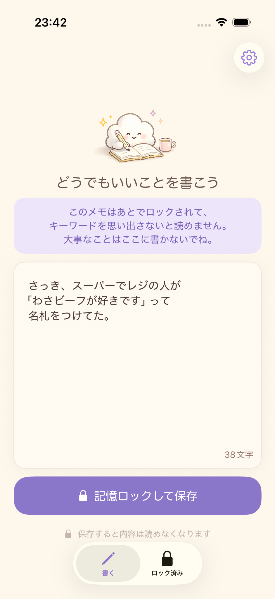

✎
気軽に書ける
どうでもいいことを、思いついたときにすぐ書き残せます。
どうでもメモは、気軽に書いたメモが保存するとロックされ、キーワードを思い出したときだけまた読めるiPhoneアプリです。忘れても困らないことを、やさしく残せます。
iPhone向けに配信中です。

普通のメモとは少し違う、どうでもメモならではの使い方をシンプルにまとめました。
どうでもいいことを、思いついたときにすぐ書き残せます。
保存した内容はそのままでは読めなくなり、記憶の余白が生まれます。
覚えているキーワードを入力して、もう一度メモをたどれます。
無料版でも10件まで保存でき、雰囲気をしっかり試せます。
メモの作成、ロック、解除、設定など、どうでもメモの主な画面をご紹介します。
左右の矢印で切り替えられます。